Dein BYD immer im Blick
Ladezustand, Reichweite, Standort und Vorheizen — sehen und steuern. Ganz einfach mit der App, die du schon hast. Und für alle, die mehr wollen: ein eigenes Dashboard.
- Nur schauen und vorheizen, ohne etwas zu installieren: deine BYD-App reicht. Siehe Teil 1.
- Mehr sehen, am eigenen PC, Tablet oder Raspberry: das EV-Cockpit (Teil 2). Es holt die Daten wahlweise aus der BYD-Cloud, aus deinem Home Assistant oder von Panoptes im Auto.
- Panoptes läuft schon auf deinem Infotainment? Dann ist die Panoptes-Oberfläche dein Cockpit. Das EV-Cockpit brauchst du nur zusätzlich, wenn du am PC deine Wallbox und PV dazu sehen willst.
- Route mit Ladestopps planen: der Ladeplaner der Community, öffentlich und ohne Anmeldung. Mitglieder der BYD-Karte planen mit eigenem Auto und schicken die Route ins Auto.
Deine BYD-Appsofort · nichts installieren
Beim Autokauf wurde die BYD-App auf deinem Handy eingerichtet. Damit kannst du das Wichtigste sofort — ohne PC, ohne Technik. Falls du sie nicht mehr hast: im App Store bzw. Google Play nach „BYD" suchen, installieren, mit deinen Zugangsdaten anmelden.
🔋 Laden & Reichweite sehen
Öffne die App — auf der Startseite siehst du sofort Akkustand in Prozent, die Reichweite und ob gerade geladen wird. Beim Laden zeigt sie dir auch die Restzeit.
📍 Wo steht mein Auto?
Die App zeigt den letzten Standort auf einer Karte — praktisch auf großen Parkplätzen oder wenn wer anders gefahren ist.
🌡️ Vorheizen / Vorklimatisieren
Im Winter vorwärmen, im Sommer vorkühlen — aus der App, bevor du einsteigst. Auch abschließen/aufsperren und Hupe/Licht zum Wiederfinden gehen hier.
Dein Auto am eigenen Bildschirmrunterladen · Doppelklick
Du willst mehr sehen als die App zeigt — aber kein Technik-Projekt starten? Dann nimm das EV-Cockpit: ein einziges Programm, das auf deinem eigenen Rechner läuft. Runterladen, entpacken, Doppelklick — der Browser geht von selbst auf und ein Assistent fragt dich alles Nötige. Nichts zu installieren, keine Vorkenntnisse. Hast du schon einen Home Assistant oder Panoptes im Auto, kann das Cockpit die Daten auch von dort holen.
- Der wichtige Hinweis (zweites BYD-Konto — dazu unten mehr)
- Woher die Daten kommen — du wählst: BYD-Konto (am einfachsten), Home Assistant („Mein Auto suchen“ findet die passenden Werte selbst) oder Panoptes im Auto. Mit BYD-Konto holt es deine Fahrzeuge, du klickst deins an (kein Fahrgestellnummer-Abtippen).
- Dein Modell — setzt automatisch die Akkugröße
- Ein Foto deines Autos und wie oft nachgefragt werden soll
- Extras — alles freiwillig, kannst du auch weglassen
- Ladestand & ehrliche Reichweite — aus deinem tatsächlichen Verbrauch gerechnet, daneben BYDs eigene Zahl. Du siehst den Unterschied.
- Vorklimatisieren — Heizen oder Kühlen per Knopf. Aus Sicherheitsgründen nur, wenn das Auto ausgeschaltet ist: Das Cockpit prüft das vor jedem Befehl und sendet sonst nichts.
- Auf einen Blick: verriegelt, Türen, Fenster, angesteckt, lädt, Gang
- Kilometerstand, Außentemperatur, Verbrauch, Reifendruck
- Standort auf der Karte
- Dein Auto in 3D in deiner Lackfarbe — oder ein Foto deines eigenen Autos
- 💶 Strompreis — „wann ist Laden am billigsten?" Der Börsenpreis deines Landes als
Stundenbalken, inklusive morgen, mit der günstigsten Stunde.
Ehrlich: Das ist der Börsenpreis, nicht deine Rechnung (Netz und Steuern fehlen). Nur mit einem Börsentarif (Tibber, aWATTar, smartENERGY) ist das dein echter Verlauf — bei Fixtarif bloß interessant. - 🔌 Ladesäulen in der Nähe — rund um den Standort deines Autos, auf der Karte der Community.
In Österreich, der Schweiz und Deutschland mit Live-Belegung: frei, belegt, außer Betrieb
oder „Status unbekannt“.
Ehrlich: Live-Daten gibt es nur, wo sie offen angeboten werden (AT: E-Control, CH: BFE, DE: MobiData BW u. a. EnBW, CC BY 4.0). Preise siehst du im Ladeplaner. - 🗺️ Route planen — für Mitglieder der BYD-Karte, direkt im Cockpit: Der Ladeplaner kennt deinen Ladestand, lernt deinen echten Verbrauch und schickt die Route ins Auto (mit Panoptes); 💳 deine Ladekarten zeigen dir den passenden Preis. Deine Fahrten bleiben auf deinem Rechner, an den Planer geht nur eine einzige Zahl (dein Korrekturfaktor).
- 📱 Aufs Tablet holen — ein Häkchen, dann geht es auch am Küchen-Tablet im eigenen WLAN
- 🎥 Wächter-Kamera (nur für Bastler) — die letzte Auslöse-Aufnahme der
360°-Kameras.
Braucht adb am Rechner, kabelloses adb am Auto, die Panoptes-App und einen USB-Stick. Sagt dir das nichts: einfach weglassen, alles andere läuft trotzdem.
Version 1.9.5. Klick auf ein Bild zum Vergrößern.
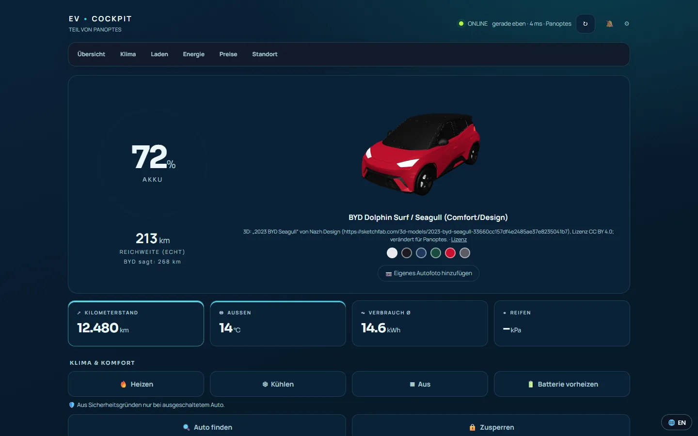
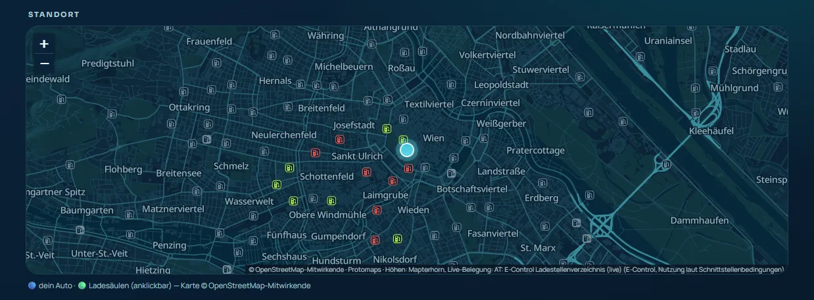
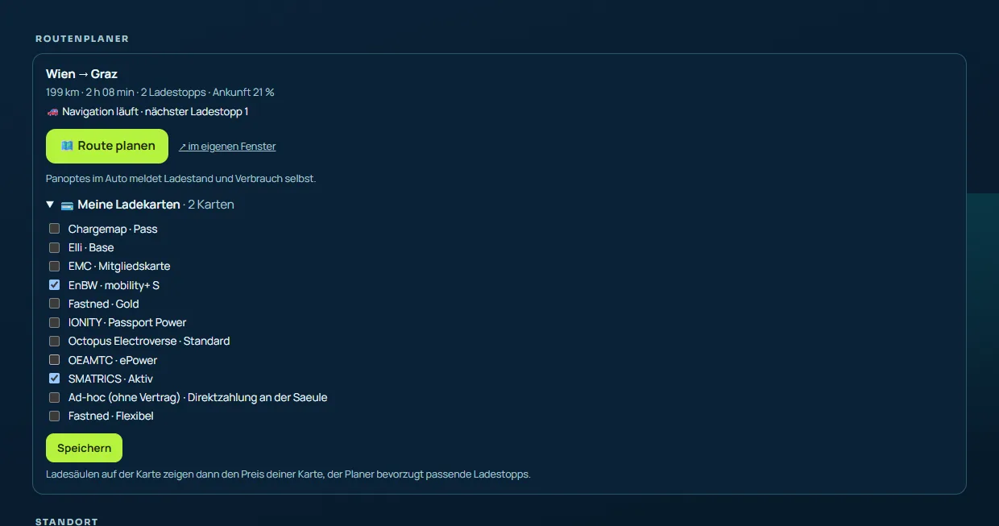
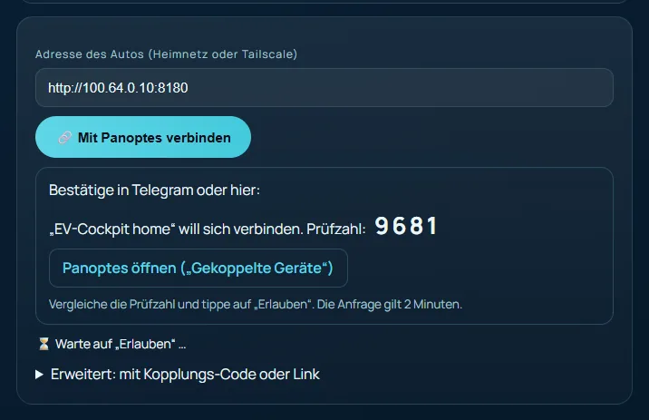
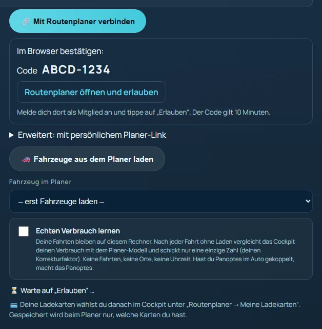
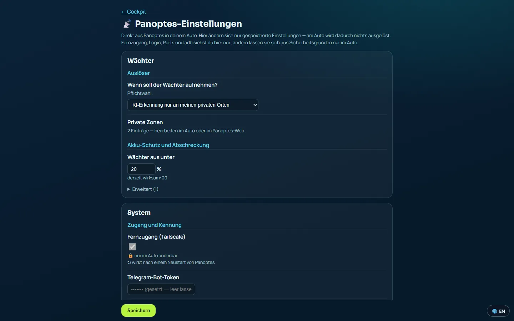
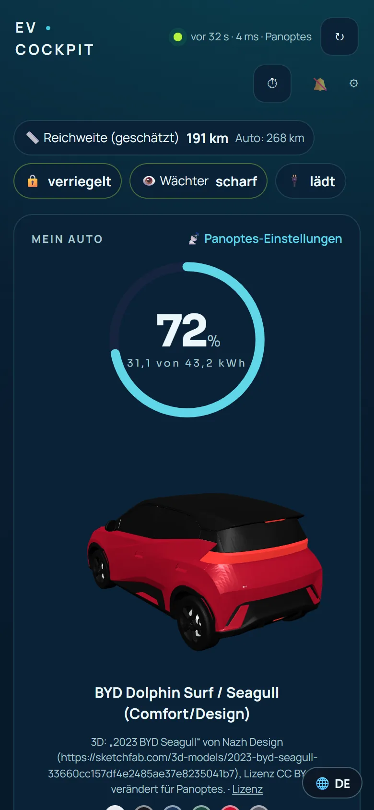
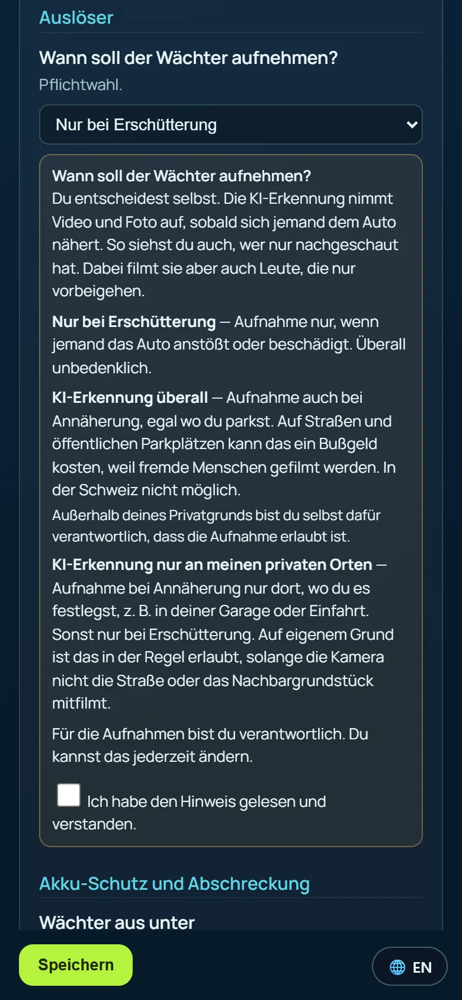
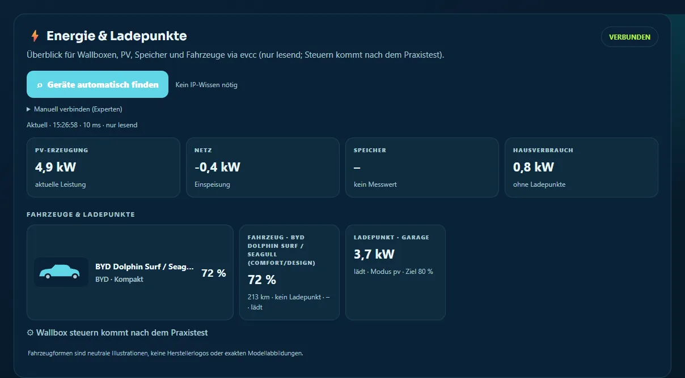
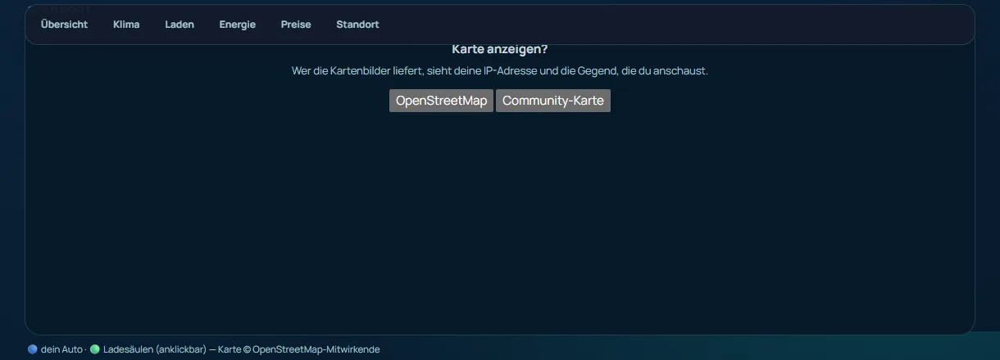
Echte Aufnahmen aus dem Programm, mit Musterdaten (Musterstandort Wien, erfundenes Auto).
Fünf Schritte, dann läuft es. Klick auf ein Bild zum Vergrößern.

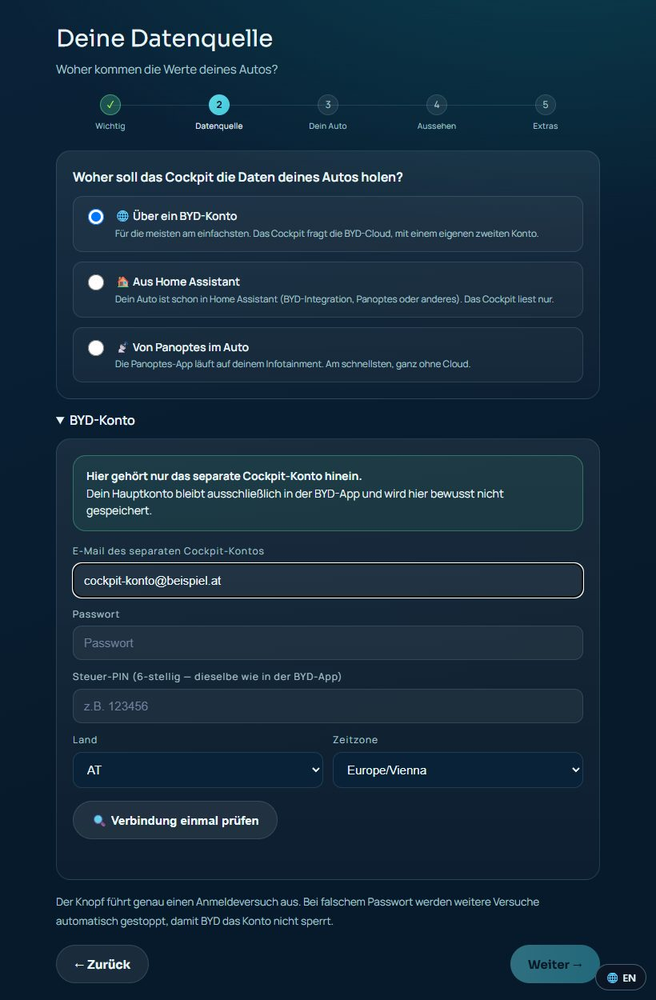


Echte Aufnahmen aus dem Programm — die Eingaben darin sind erfundene Musterdaten.
Version 1.10.2 — was ist neu?
🌐 Deutsch oder Englisch — die App richtet sich nach deiner Browsersprache, umschaltbar in der Ecke.
🔒 Muss man dem trauen? Das Tool fragt nach deinem BYD-Login — darum liegt der
komplette Quelltext offen auf GitHub.
Jeder kann nachlesen, dass deine Daten deinen Rechner nicht verlassen. Fehler oder Fragen?
Als Issue melden.
Windows: ZIP entpacken → Doppelklick auf Start.bat. Python ist
im Paket schon dabei — du installierst nichts. Beim ersten Start meldet sich eventuell
Windows („Der Computer wurde geschützt"): auf „Weitere Informationen" → „Trotzdem
ausführen". Das kommt, weil eine Signatur mehrere hundert Euro im Jahr kostet — bei einem
kostenlosen Werkzeug zahlt das niemand. In der beiliegenden LIESMICH.txt steht alles nochmal
in Ruhe erklärt.
evcockpit.py im Paket ist ganz normaler, lesbarer Text — mach ihn auf und schau nach.Deine echte Anlage anbindenechte Werte, keine Simulation
Du hast eine echte PV-Anlage, einen echten Stromtarif, vielleicht Speicher und Wallbox? Dann bring alles auf einen Bildschirm — mit deinen echten Live-Zahlen, nicht geschätzt. Die gratis Zentrale dafür heißt „Home Assistant". Sie simuliert nichts — sie liest deine tatsächlichen Geräte aus.

Du verbindest einmal deine eigene Marke — dann kommen echte Zahlen
| Was du hast | Wird echt angebunden (Beispiele) |
|---|---|
| 🔆 Wechselrichter / PV | Fronius, SMA, Huawei, SolarEdge, Kostal, Goodwe, Victron, Sungrow … |
| 💶 Dynamischer Tarif | Tibber, aWATTar, EPEX, Nordpool, Octopus — zeigt deinen echten Preis |
| 🔋 Heimspeicher | meist über denselben Wechselrichter — echter Ladestand |
| 🔌 Wallbox | go-e, Easee, KEBA, Wallbox, openWB, Tesla Wall Connector … |
| 🚗 Auto | dein BYD-App-Login (dieselben Daten wie in der App) |
Jede Verbindung ist ein fertiger Baustein zum Anklicken — du wählst deine Marke, loggst dich mit deinem eigenen Konto ein, fertig. Danach zeigt das Dashboard deine echte Produktion, deinen Verbrauch, den Speicher-Ladestand und den aktuellen Tarifpreis — live.
Wähle dein Gerät (Wallbox, PV, Tarif …) und deine Marke (Tuya, EGO, go-e, Fronius, Tibber …) → du bekommst genau die Schritte für deinen Login. Deine Daten bleiben bei dir.
Was du brauchst
- Ein kleines „Home Assistant Green"-Kästchen (~90–130 €, einmalig) — Stecker rein.
- Die Zugangsdaten deiner eigenen Geräte (PV-Portal, Tarif-App, BYD-App).
- Ca. 1–2 Stunden für den ersten Aufbau.
Noch keine PV-Anlage?erst mal durchrechnen
Bevor du 10.000 € ausgibst: rechne durch, ob es sich für dich lohnt. Home Assistant kann das — mit deinem echten Stromverbrauch, dem echten Börsenpreis und deinen echten Fahrkilometern. Nur die Anlage selbst wird angenommen (z.B. 5 kWp + 10 kWh Speicher).

- Wann ist sie abbezahlt? Hochrechnung aus den tatsächlich geloggten Tagen — je länger sie läuft (vor allem über den Winter), desto ehrlicher wird die Zahl.
- Was spare ich pro 100 km? Benzin gegen eigenen Sonnenstrom, mit deinen echten Fahrten.
- Lohnt sich ein Speicher? Oder verkauf ich lieber zum Börsenpreis?
- Wann lädt das Auto am günstigsten? Überschuss, Nachtstrom oder Börsentief.
Für Bastler & Technik-Fansoffen & kostenlos
Alles ist offen: der komplette Quelltext des EV-Cockpits liegt auf GitHub (MIT-Lizenz). Linux, macOS und Raspberry Pi starten mit einem Befehl, eigene Ideen sind willkommen.